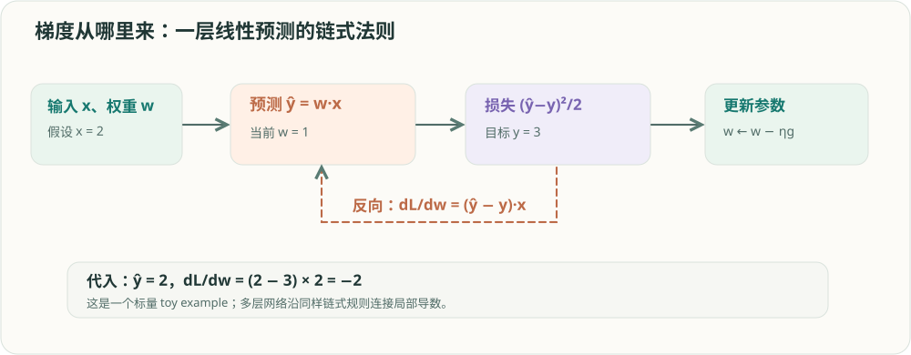

优化理论：梯度如何让模型学习
训练不是神秘地修改权重，而是定义目标函数、计算方向，再控制每次更新的步长。理解梯度下降与链式法则，才能判断学习率、收敛和优化器行为。
01 · 目标函数与参数空间
设一个模型为每条样本输出预测值，损失函数 L(θ) 把预测与目标的偏离汇总成一个可比较的标量。训练就是在参数空间里寻找使损失较小的参数。即使使用随机优化器，也先要明确：损失是什么、对哪些参数可微、数据是怎样采样的。
在单个参数的例子中，L(w)=(w−3)² 是一个开口向上的抛物线，最小值在 w=3。它的导数为 2(w−3)，正号意味着向左减小，负号意味着向右增大。梯度是局部变化率，不是“离最优值还有多远”的通用距离。
02 · 从导数到梯度下降
对多个参数，梯度是所有偏导数组成的向量。经典梯度下降在当前点计算梯度，然后沿相反方向更新。设学习率 η>0，则一次更新为：
这一式是局部迭代法，不保证任意损失与步长下都收敛。比如对 (w−3)² 从 w₀=0 出发，η=0.2 产生 0→1.2→1.92→2.352；而 η=1.1 产生 0→6.6→−1.32，相对最优点的距离逐步放大。

03 · 学习率与稳定性
对上述一维二次函数，误差满足 eₜ₊₁=(1−2η)eₜ。因此在无浮点异常时，只要 |1−2η|<1，也就是 0<η<1，迭代就会线性收敛到 w=3。这个区间只对当前已指定的损失成立，不能泛化成神经网络的推荐学习率。
学习率过小会增加需要的迭代次数，过大可能越过低谷甚至发散。学习率衰减与 warmup 是不同的调度策略，不等于会自动解决数据尺度、梯度噪声和数值不稳定问题。
检查训练曲线：损失突然变成 NaN 时，需要检查学习率、数据标准化、溢出及不合法的输入值；训练损失下降而验证损失上升时，应考虑过拟合，而不只是继续调学习率。
04 · 链式法则与反向传播
对一层线性预测 ŷ=w·x 和平方损失 L=(ŷ−y)²/2，先对预测值求导得到 ∂L/∂ŷ=ŷ−y，再对权重求导得到 ∂ŷ/∂w=x，两者相乘便是 ∂L/∂w=(ŷ−y)x。如果 x=2、w=1、y=3，预测为 2，梯度为 −2；小步下降会增大 w，使预测更接近 3。

深度网络的反向传播沿计算图反向累计这些局部导数，避免对每个参数都重复展开完整表达式。复杂运算还需区分张量形状、向量雅可比乘积与梯度累积，并不是只会求单变量导数就能不加区分地处理所有模型。
05 · 批量、随机与自适应优化
全批量梯度使用整个训练集计算每步梯度，随机梯度下降以单个样本近似，mini-batch 使用一小批数据得到有噪声的估计。在深度学习中 mini-batch 最常见，但含噪声的优化轨迹与全数据梯度不同。
Momentum 会累积方向信息；Adam 引入一阶和二阶矩的自适应估计；AdamW 把权重衰减与 Adam 的参数更新解耦。不能简单声称某一种优化器总是效果最好。还需要考察 batch size、权重衰减、学习率计划、归一化和任务的最终评价指标。
凸函数的局部最优点也是全局最优点；非凸神经网络的优化通常没有这种简单保证。即使对凸目标，是否存在唯一最优点也依赖严格凸性、约束条件等前提。
06 · 动手验证收敛与发散
以下纯 Python 代码复现上面的二次函数，断言小步长使最终误差变小，大步长使误差变大。输出是一组解析教学轨迹，不是训练真实模型的 benchmark。
def run(eta, steps=8):
w = 0.0
trajectory = [w]
for _ in range(steps):
grad = 2 * (w - 3)
w -= eta * grad
trajectory.append(w)
return trajectory
stable = run(0.2)
unstable = run(1.1)
print('stable:', [round(x, 3) for x in stable])
print('unstable:', [round(x, 3) for x in unstable])
assert abs(stable[-1] - 3) < abs(stable[0] - 3)
assert abs(unstable[-1] - 3) > abs(unstable[0] - 3)依赖 Python 3.10+，无第三方库。实务中要同时记录训练和验证指标，以及优化器参数、随机种子和输入数据的数值范围。